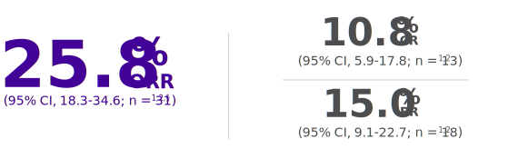

-
-
Response rate (N = 120)1,2,†
An additional 15.0% had stable disease (n=18)
*The primary study endpoint of ORR was based on an independent review, where a 20% ORR was considered clinically meaningful.2 †Sample size was based on a 2-stage optimal design, with a hypothesized ORR of the alternate hypothesis (p1 = 20%) for BELEODAQ and a minimal or uninteresting ORR of null hypothesis (p0 = 9%).1 §No meaningful difference in response rate was observed between patients ≥ 75 years and those < 75 years.1
BELEODAQ
EXCEEDS THE TARGET RESPONSE RATE CONSIDERED CLINICALLY RELEVANT FOR THE BELIEF TRIAL2,*
BELIEF TRIAL -
MOST PATIENTS IN THE BELIEF TRIAL
BELIEF TRIAL
TOLERATED THE
TARGET DOSE OF BELEODAQ1,212%
OF PATIENTS
receiving BELEODAQ required a dosage reduction due to AEs
88%
OF PATIENTS
receiving BELEODAQ did not require a dosage reduction due to AEs
Tolerability was Established for Patients with R/R PTCL at First and Subsequent Relapse1,2
-
BE READY FOR R/R PTCL FROM THE ONSET
CONSIDER HOW BELEODAQ MAY FIT INTO YOUR PATIENT’S TREATMENT PLAN AT FIRST RELAPSE
Learn More